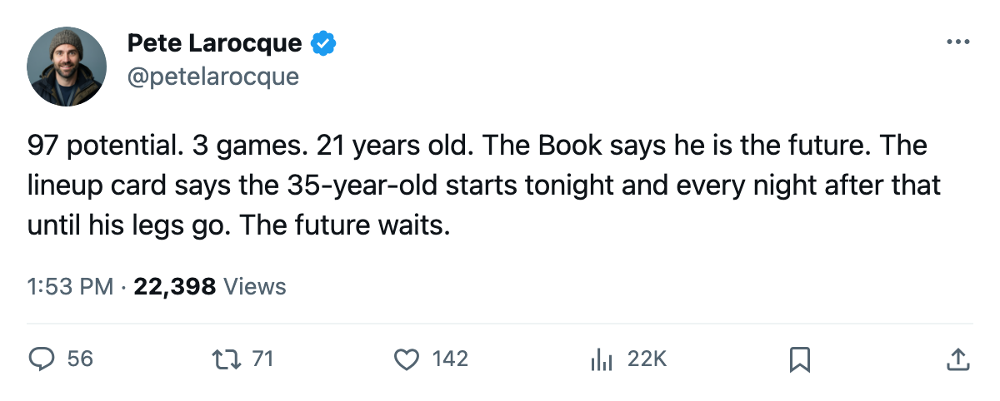

FLA
FLA NYI
NYI TOR
TORThree Goalies Have 97 Potential in the Book. Together They Played 19 Games.
Maxime Ouellet, Ray Emery, and Dan Blackburn carry the same potential grade in the Bureau's Book. The league gave them 19 starts between them in 2004-05.
 Pete LarocqueScouting editor · The Prospect File
Pete LarocqueScouting editor · The Prospect File
Maxime Ouellet86 played 13 games at Toronto. Ray Emery86 played 3 at  Ottawa Senators.
Ottawa Senators.  Dan Blackburn81 played 3 at
Dan Blackburn81 played 3 at  New York Rangers. The Bureau's Book gives all three a potential grade of 97. Their ages: 23, 22, 21.
New York Rangers. The Bureau's Book gives all three a potential grade of 97. Their ages: 23, 22, 21.
That is 19 games for three goaltenders the Bureau rates as futures-tier talent. The Book also gives  Rick DiPietro89 a 99 potential. He played 63 games and finished the season with a 1.90 GAA and .948 save percentage in the playoffs as the starter for the Presidents' Trophy champion. The difference between 97 and 99 in the Book is 2 points. The difference between 19 games and 63 is everything.
Rick DiPietro89 a 99 potential. He played 63 games and finished the season with a 1.90 GAA and .948 save percentage in the playoffs as the starter for the Presidents' Trophy champion. The difference between 97 and 99 in the Book is 2 points. The difference between 19 games and 63 is everything.
The under-23 goaltenders with potential grades of 90 or above in the Book number six.  Pascal Leclaire93 (93 potential, 49 games at
Pascal Leclaire93 (93 potential, 49 games at  Columbus Blue Jackets), DiPietro (99, 63 games), Jason Bacashihua91 (90, 1 game at
Columbus Blue Jackets), DiPietro (99, 63 games), Jason Bacashihua91 (90, 1 game at  Dallas Stars), Ouellet (97, 13), Emery (97, 3), Blackburn (97, 3).
Dallas Stars), Ouellet (97, 13), Emery (97, 3), Blackburn (97, 3).
Two of the six are full-time starters. The other four played 20 games combined.
Who sits in front of them
Bacashihua watched  Marty Turco95 carry Dallas all season. Turco is 7-1 with a 1.45 GAA in the playoffs right now, two wins from a conference finals berth. The 2001 first-rounder (#26) played 1 game. He is 22 years old with a 90 potential grade and an 83 overall.
Marty Turco95 carry Dallas all season. Turco is 7-1 with a 1.45 GAA in the playoffs right now, two wins from a conference finals berth. The 2001 first-rounder (#26) played 1 game. He is 22 years old with a 90 potential grade and an 83 overall.
Ouellet watched  Roberto Luongo97 carry Toronto. Luongo is 7-2 with a 1.90 GAA in this spring's postseason. Ouellet played 13 games in a backup's schedule. He went 5-5 with a .900 save percentage in those 13.
Roberto Luongo97 carry Toronto. Luongo is 7-2 with a 1.90 GAA in this spring's postseason. Ouellet played 13 games in a backup's schedule. He went 5-5 with a .900 save percentage in those 13.
Blackburn is 21. He played 3 games at New York and 8 in total across all snapshots this season. His overall reads 79, his base reads 79, his form reads 0. He has not moved.
The workhorse goaltenders in 2004-05 logged 63 to 72 games, in and out every night. None of them are under 25. The development path for a young goaltender runs through a veteran's decline, not through a coach's patience.
The Index says they are ready
Leclaire is +4 on the Development Index. DiPietro is +4. Bacashihua is +4. The Index measures current form relative to base; a +4 means their current overall grade sits 4 above what the Book considers their underlying level. Three of the four men who barely played are trending up in form. The form does not require starting 60 games. It requires the few games they got to go well.
Ouellet sits at 0 on the Index. Emery is +1. Blackburn is 0. Three men rated 97, no upward movement.
Josh Harding83 at  Washington Capitals carries a 74 overall and 83 potential. He played 7 games in the regular season and 2 in the playoffs, where he went 2-0 with a 1.00 GAA and .952 save percentage. He is 20. He sits behind
Washington Capitals carries a 74 overall and 83 potential. He played 7 games in the regular season and 2 in the playoffs, where he went 2-0 with a 1.00 GAA and .952 save percentage. He is 20. He sits behind  Olaf Kolzig91, who is 6-0 with a 1.43 GAA in this postseason.
Olaf Kolzig91, who is 6-0 with a 1.43 GAA in this postseason.
Harding's Index rating is +5. That puts him with  Ilya Kovalchuk86 and
Ilya Kovalchuk86 and  Rostislav Klesla87, two of the league's most productive young players. The form says the 20-year-old is ready. The 1.43 GAA says the 34-year-old is not going anywhere.
Rostislav Klesla87, two of the league's most productive young players. The form says the 20-year-old is ready. The 1.43 GAA says the 34-year-old is not going anywhere.
The Book does not grade opportunity. It grades talent. Six goaltenders under 23 carry potential grades of 90 or above. Four of them will enter the 2005-06 season on NHL rosters, sitting on the bench, watching a veteran carry 60+ games. The overall stays flat and the Index stays at zero. Then they turn 24, then 25, and the Book starts to wonder why the 97 never became an 87.
